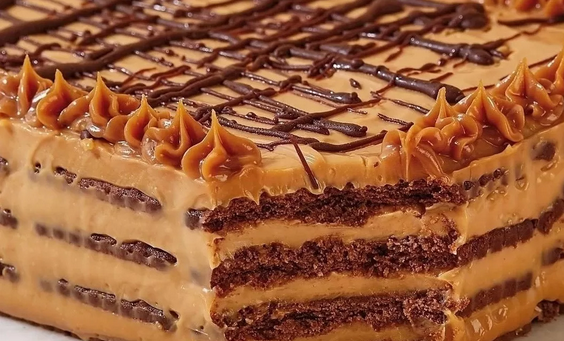

¡BIENVENIDO A EN LA PERA!
Si buscas algo para bajonear un poco ¡Estás en el lugar indicado!
Chocotorta
No hace falta ser un gran repostero para poder hacer una buena receta de chocotorta.
Cualquiera lo puede hacer! En estos días si tenés niños a tu cargo y ya no sabés como entretenerlos,
hacer juntos esta torta fácil es un planazo. Es muy sencilla y entretenida, me lo vas a agradecer!

Ingredientes
- Dulce de leche: 400g
- Queso crema: 300g
- Chocolinas: 400g
- Café (para remojar las galletitas)
- Chocolate cobertura: 50g
- Cacao en polvo: 50g
Pasito a Pasito
- Mezclar el queso crema con el dulce de leche hasta que la mezcla quede homogénea
- Remojar cada galletita y colocar en una fuente hasta formar una capa. Colocar una capa de la crema de dulce de leche. Otra capa de galletitas humedecidas y así 4 veces.
- Llevar a enfriar por 1 hora en refrigerador.
- Espolvorear con cacao en polvo. Al servir, rallar un poco de chocolate amargo por encima y a ser felices y comer chocotorta!
Este postre es una maravilla, espero que lo hayan disfrutado!
Hacé click acá y mirá más recetitas para que te inspires
Volver al inicio